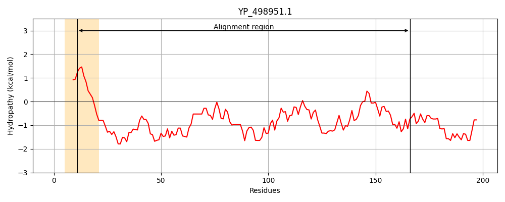
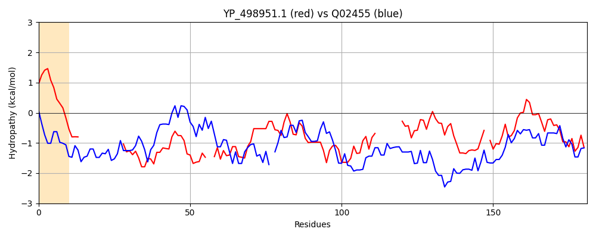

Hit Accession: Q02455
Hit TCID: 1.I.1.1.1
Hit Description: gnl|BL_ORD_ID|12066 gnl|TC-DB|Q02455|1.I.1.1.1 Protein MLP1 - Saccharomyces cerevisiae (Baker's yeast).
Mach Len: 181
e:0.000709
Query TMS Count : 1
Hit TMS Count: 0
TMS-Overlap Score: 0.000000
Predicted Substrates:None
BLAST Alignment:
Score: 91 , Bit scores: 39 bits, E-value: 7.1e-04, Alignment length: 181, Percentage identity: 23
Query: 11 LASTLILTGCASDQ--------------SDNEDHHTSTGIHAPKSAKKLETKDIFN--SDKKNSDISDAEMKQAIEKYLSVNSDILDNKYIMQHKLDKQIDSQTKVTEKQAE--------TLSHLSNLAVKNDLHFKKFVTENNIPKE-YKKPVELMMNYFKALNSTIANVDEDIEKLSYQ 166
L++TL LT +DQ D++ H T + KS + ++ N ++K + +KQ + K LS D L L K+ + + T K + LS L + D H K+ +NN E Y+ +E + ++++ +++ + DIEKL Y+
Sbjct: 696 LSNTLDLTKAENDQLRKRFDYLQNTILKQDSKTHETLNEYVSCKSKLSIVETELLNLKEEQKLRVHLEKNLKQELNK-LSPEKDSLRIMVTQLQTLQKEREDLLEETRKSCQKKIDELEDALSELKKETSQKDHHIKQLEEDNNSNIEWYQNKIEALKKDYESVITSVDSKQTDIEKLQYK 875 | Protein Hydropathy Plots: |
|---|
|  |  |
Pairwise Alignment-Hydropathy Plot:
|
|---|
|  |